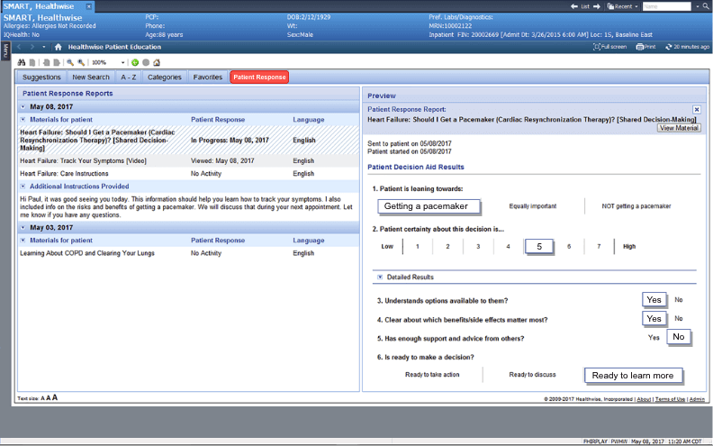

Access Healthwise Patient Education from within Cerner PowerChart.
Begin by selecting a patient.
Before we get started, which experience would you like to preview?
Inside the patient’s record, select Healthwise Patient Education.
Patient data, including demographics, diagnosis, medicines and procedural codes…
…triggers a list of relevant education materials.
View the selected education in the preview window.
Choose the patient’s language.
Quickly access frequently used education by saving it to the Favorites tab.
Find education on other diagnoses or medications by starting a new search…
…or by browsing through categories of medical topics…
…or an A-Z list.
Education chosen for the patient appears here.
Add personal instructions to the patient prior to sending.
The completed message is added to the patient’s education materials, which can be printed during the visit, sent electronically to the patient’s HealtheLife Patient Portal, or delivered to a secure message center.
Education given to the patient is captured in the patient record, allowing the entire care team to see what each patient received and to use for quality measures.
View your patient’s activity in the Patient Response tab.
See the patient’s engagement with the education materials.
See the patient’s engagement with the education materials.
Click into the patient’s response to see details on their stated preferences, and level of understanding of their options. Captured responses can help guide the next step in the care plan.
Population reports and dashboards provide a wide perspective on patient engagement and how clinicians are using health education at an organizational level.

Healthwise®Solution for Cerner: Care Team Experience
From the provider’s email, patients are prompted to access their personal and secure message center.
From the message center inbox, patients can read notes sent to them by their provider...
…and view their health education.
Education resources give the patient important information about how to care for themselves and when to call for help.
Patients can also watch short videos to learn more about managing their health and making healthy changes.
Interactive tools help patients learn about the risks and benefits of different treatment options and share their preferences.
Healthwise®Solution for Cerner: Patient Experience
Find out more about the Healthwise® Solution for Cerner.
Request a Live Demo
Explore the Patient Experience >
Explore the Care Team Experience >